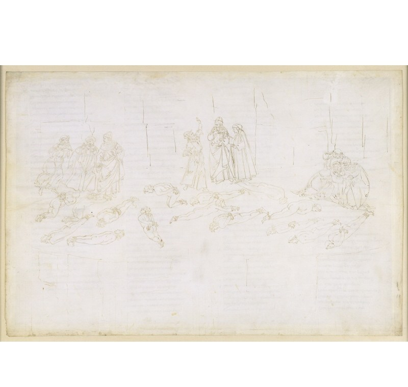

Песнь 21 из 33
Стаций. Отчего дрожит гора

Кратко
Поэтов нагоняет тень и приветствует их. Это римский поэт Стаций — именно его освобождение и сотрясло гору. Он объясняет: ниже вершины гора не подвластна земным стихиям, и дрожь с пением «Gloria» бывает лишь тогда, когда душа ощущает себя очищенной и готовой взойти. Стаций с восторгом говорит, что всем обязан «Энеиде» — «матери и кормилице» своей поэзии, — и мечтал бы повидать её творца. Вергилий запрещает Данте открыться, но тот не сдерживает улыбки — и тайна раскрывается.
Главные моменты
- Явление Стация — нового спутника на пути к вершине.
- Разгадка землетрясения: гора ликует, когда душа готова подняться выше.
- Стаций чтит «Энеиду» как мать и кормилицу своего творчества.
- Трогательный миг узнавания: перед Стацием — сам Вергилий.
Значение
Поэзия как духовная преемственность; готовность души — вот что движет горой.